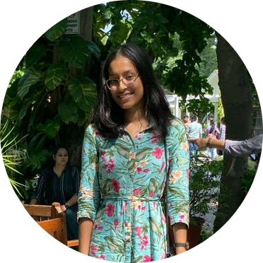

|  | Purvi ChaurasiaI am a second year, B.Tech student at Indira Gandhi Delhi Technical University for Women. I am a person of diverse interests ranging from data science and AI to development. I have previously worked as a data science intern at CerebrumX.AI and as a Research Intern under Dr.Rishabh Kaushal. I am also the Co-founder and President of The Arc, Data Science Club of IGDTUW. |
Indira Gandhi Delhi Technical University for Women, New Delhi
Modern School, New Delhi
| Position | Duration | |
|---|---|---|
| Data Science Intern at CerebrumX.AI | September 2022 - November 2022 | |
| Research Intern at Association of Computing Machinery | July 2022 - September 2022 |
| Python | ⭐⭐⭐⭐ | C++ | ⭐⭐⭐⭐ | Java | ⭐⭐⭐ | |||||
| Webscraping | ⭐⭐⭐⭐ | Data Science | ⭐⭐⭐⭐ | SQL | ⭐⭐⭐ |